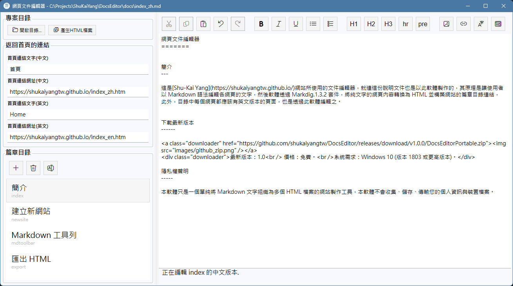

網頁文件編輯器
簡介
這是Shu-Kai Yang網站所使用的文件編輯器，就連這份說明文件也是以此軟體製作的，其原理是讓使用者 以 Markdown 語法編輯各網頁的文字，然後軟體透過 Markdig.1.4.2 套件，將純文字的網頁內容轉換為 HTML 並構築網站的篇章目錄連結，此外，目錄中每個網頁都應該有英文版本的頁面，也是透過此軟體編輯之。

如上圖所示，使用者在左邊的篇章目錄中建立或選擇目前要編輯的頁面，在右邊的文字編輯區以 Markdown 語法(可混和 HTML 語法)編輯該頁 的內容，利用上方的工具列可以在文章中插入 Markdown 語法，並利用右上角語言切換按鈕切換中英文版本，或在網頁瀏覽器中預覽目前編輯 的效果。
下載最新版本

最新版本：1.0
價格：免費。
系統需求：Windows 10 (版本 1803 或更高版本)。
價格：免費。
系統需求：Windows 10 (版本 1803 或更高版本)。
隱私權聲明
本軟體只是一個單純將 Markdown 文字組織為多個 HTML 檔案的網站製作工具，本軟體不會收集、儲存、傳輸您的個人資訊與裝置檔案。